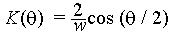

P S Karthikeyan
74/10 Gem Flats,
Anna Nagar West Extension,
Madras 600101,
Tamil Nadu, India,
e-mail: kandr@giasmd01.vsnl.net.in
Tutorial on Cloth Modelling
This tutorial deals with modelling cloth from the perspective of displaying
the cloth in different situations like cloth draped over a solid object,
cloth draped on a mannequin, freely hanging cloth, cloth flowing in air etc.
We will give a general overview of different methods that have been developed
so far. We will deal with one method in detail and guide you through writing
your own simulations using that model.
Introduction
Efforts to model the complex creases and drapes of cloth can be
classified under two different groups.
Computer graphics animators who have been engrossed only with
the draping and shape of cloth from an animators point of view for
the sheer pleasure of animating a natural phenomena. They wanted to produce
models which exhibit cloth like behaviour. They were not interested in
lending a physical meaning to their work. The models could not be used
to predict how different cloth will behave. It would generate results for
a generic cloth.
CAD Engineers who wanted to model cloth in terms of its mechanical
behaviour. They treated it as an exclusive problem of structural mechanics.
They were interested in measuring traditional mechanical properties like
Young's modulus, Poisson ratio etc. These are utterly inadequate for
predicting the drape of fabric. They did not consider the internal structure
of cloth as a weave of threads. We will not be dealing with these models in
this tutorial.
Some work has been done incorporating the above two approaches.
This was mainly inspired by apparel designers, interior designers etc who were
interested in the behaviour of different types of cloth which was part of
their professional work. For example an interior designer would like to
know how a woollen curtain would hang compared to a cotton one.
In this tutorial we will give you an overview of work done by people
using method 1 and give an exhaustive explanation of the work done by
David Breen et al and Eberhardt et al. among others using method 3. After
reading this tutorial you will be in a position to write code to model the
draping behaviour of cloth. We will not be dealing with method 2 which is
mainly structural mechanics.
Computer Animation Models
Computer animators modelling cloth were not concerned with the intrinsic
properties of cloth specific to a type of cloth.
All they attempted was what a "cloth like material" or "average cloth"
would behave under whatever constraints they were modelling.
For example rendering the shape of a square peice of
cloth when it is draped on a sphere.
This approach itself can be broken down into 3 parts.
Goemetric modelling The cloth is not physically modelled as
a new structure. We extend other mechanics theories empirically. These
methods were computationally very fast but visually not very appealing.
Physical modelling using energies The cloth is considered as a
new structure for which a model is suggested. These methods were
basically energy minimization models. They were based on the law
of nature that
Every body tends to an equillibrium position in which it has its minimum
energy.
Every body has potential energy and kinetic energy. Kinetic energy as we all
know is due to its velocity given by (mv2)/2. Potential
energy of cloth is what we dont know. This is defined differently according
to model chosen.
Once we have the potential energy and kinetic energy our problem is half
solved. All we have to do is define the cloth using a particle grid to
discretise the problem. Then use the Lagrange equation of motion:
The Lagrange equation is a fundamental equation of kinematics, which can
be used to determine equillibrium position when the energy of a body is known.
Physically is states that:
The rate of change of (rate of change of Lagrangian with velocity) is
effectively the rate of change of Lagragian with space. The Lagrangian is
(Kinetic energy) - (Potential energy).
This is true for each dimension. This is what is expressed by the above
equation. To read more about the Lagrangian look in any standard
Mechanics book.
We need to discretise the problem to solve this differential equation.
We further need the boundary condition to solve the problem fully.
The boundary conditions for these problems will be:
At time t = 0, the cloth is a rest.
The velocity of all points is zero.
We can arbitrarily define a spatial boundary condition giving the location
of all points at t = 0. For example if we are draping the cloth on a cube, we
obviously start with the cloth resting like a sheet on the cube and then
allow it fall and drape itself. See figure below.
This gives a further set of i * j conditions.
Using these boundary conditions and solving the differential eqautions
numerically will give us a set of simultaneous equations
involving the postions of the elements of the grid (i,j) for all point
of the grid.
Solving these equations will give equillibrium position of the grid points,
which amounts to the drape of the cloth.
Physical modelling using Forces The physical model can
also be attempted using forces. Then we use the
law :
where r is the position vector of a point.
We determine all forces (internal and external) that are acting on the
cloth. Discretise the problem and then solve the set of simultaneous
equations to give the position of particles at equllibrium similar to what
was done in the previous method.
Geometric Models
Geometric models do not consider the physical properties of cloth. Rather,
they focus on the appearance, particularly folds and creases, which they
represent by geometrical equations. Geometrical techniques require a
considerable degree of user intervention. They are highly specific solutions.
For example one technique can represent cloth hung from a fixed number of
points very well. Another can represent creases and folds very well.
The work of Weil
Weil1 was probably the first person to
model cloth in any method whatsoever.
He did this work in 1986 using a very simple geometric model extended from
the theory of cables. He worked on the specific problem of cloth hanging
from a finite number of points (say 3 or 4).
A cable under its self-weight forms a catenary curve at equillibrium position.
A catenary curve has the equation
y = a cosh(x/b)
We can extend this logic to 3D for a cloth. A cloth hanging under constraints
at finite number of points is a logical extension of a catenary curve
in 2D. So we can develop a system of catenary curves to represent the cloth.
If we have cloth hanging at 4 points. Then we fit catenary curves between the
2 diagonals. These two will naturally intersect. What we have to do is that find
a resultant curve, but to simplify matters we will just ignore the lower of
the two curves.
At this stage we have a wireframe describing the rough shape of the cloth. We
further refine the shape by dividing the cloth into smaller and smaller
triangles and fitting catenary curves among this. This will generate a
better and better picture. We can stop at any arbitrary point depending on
the accuracy of the simulated shape we require.
Another geometric method
This method is being presented for the first time in this tutorial. It has
been developed by none other than Yours Truly. It is similar to the Weil
method in the sense that it is also derived from the theory of cables.
A working simulation has been developed. Look in the Appendix.
The method is meant to simulate a polygonal peice being hung at each vertex
at any height. Look at figure below.
What we have done is extended the logic of painting a polygon to rendering
its shape in 3D. To make explanations easier let us consider a cloth
which is in the shape of a quadrilateral.
Essentially what we are doing while rendering hanging cloth is finding the
different heights which different points of the cloth obtain at equillibrium.
We consider a quadrilateral connecting the 4 points. Then consider a square
encompassing the quadrilateral as shown in figure above. The square is
divided into a finite number of cells. We consider only the points which
fall inside the quadrilateral. At the boundaries we take the point closest to
the line directly connecting the vertices concerned.
We have effectively discretised the problem. All we have to do now is
find the height of all points in our grid which lie inside the quadrilateral.
The first step is to find the shape at the boundaries, because this is the
easiest to guess.
What is the most likely shape that the cloth takes between two vertices.
It is most probably a catenary. The reasons why we can choose this are:
Cloth is light and the vertices are not much influenced by the weight
of the cloth at other vertices.
Using assumption 1, between two vertices if we can assume the only
effective force acting on the cloth are weight of the cloth around and between
the vertices. This can be safely approximated to a cable. Even if the approximation
is wrong, we are only drawing the border of the cloth as a cable.
We extend this logic to all the vertices of the polygon. So now we have
a set of catenary curves which give the boundary of the cloth. We have to
determine the shape of the intermediate cloth.
The problem has now been reduced to finding a route for curve AB to CD with
boundary condition AD and BC at the edges for all points. This can
be considered as averaging the effect of the 4 boundary conditions for all
points.
Each interior point is influenced only by its neighbouring 4 points as far as
its height is concerned ie we can assume each point to be held up by its
neighbouring points which can be seen from the weave of cloth.
Therefore we can deduce that
Hi,j = { Hi,j-1 + Hi,j+1 + Hi-1,j + Hi+1,j } / 4,
where Hi,j is the height of the point at (i,j).
Using the boundary condition a first approximation
for the location of all points can be derived.
We keep iterating until a stable configuration is reached. This can be
defined as
abs ( Hi,jk - Hi,jk+1 ) <= minvalue,
where minvalue can be defined according to precision required.
Now we have the location of all points. To render the shape of cloth we
fit a polygon between 4 points and raytrace the scene.
Advantages of this method are:
Speed of rendering
Cloth which is textured (ie has a pattern on it can also be rendered)
Computationally cheap in terms of memory and hardware
After computing the surface, rendering can been done in any freely
available 3D modeller like POV ray, 3D studio etc.
Drawbacks of the method:
We totally ignore the fact that the cloth stretches.
The assumptions are purely empirical and are not proved, although by
physical reasoning we can say they are plausible assumptions.
The logic of the cloth taking a catenary between 2 vertices can be applied
to any and every pair of vertices of the cloth. So we can generate actually
6 curves for our quadrilateral. Plugging all six initial conditions before
we begin our iteration will converge to the solution faster than using only
4.
But while using six conditions what do we do at the point of intersection
of the diagonals, because we will get 2 different heights for both diagonals?
We take either the average, or a weighted average depending on the perpendicular
distance of the diagonals from the center of mass of the cloth.
While fixing the catenary curve between 2 vertices we use the equation of
the catenary
y = acosh ( x + b)
We have two points and two constants a, b.
Using the two points we evaluate the two points a, b.
In the simulation we have simulated a square peice of cloth hanging from the
ceiling. So our catenary reduces to y =  a cosh (x) for all 4 edges. We then
fill in the inside points. We have developed our own 3D viewer to view
the model. The image of the cloth obtained is included.
In physical models various structural studies are done on the cloth and
its intrinsic behaviour is attempted to be simulated. This basically
involves finding the potential energy of the cloth, because in cloth the
weaves are held just by the friction and tension amongst the threads.
Various methods and models have been proposed since Weil's first geometric
model. We present below a brief overview of some of the methods.
The work of C Feynman2 - He represented the cloth by a 2D grid and the final
postion of cloth was derived based on the minimization of energy.
The tendency of any body in nature is to reduce its energy to a minimum.
So we calculate the enery of all points and minimize it to get the final
position of the cloth. The Energy equation he took was of the form
where ks, kb, ks are the elasticity,
bending and density constants. The energy at any point (i, j) is
calculated relative to the surrounding 8 points. The figure below explains
the formation of the grid from cloth. The figure on the left if the cloth and
the one on the right is the grid. P(i,j) contains position, velocity, acceleration
and all other data about that point. The energy minimization was done using the
method of steepest descent.
Do not confuse this Feynman with the illustrious Richard Feynman who
passed away recently!
The work of Terzopoulos3 - Terzopoulos introduced a deformable
model intended for generalized flexible objects, but the model has been
used in several cases for cloth visualisation. The figure below represents
his model.
This model did not take into consideration the weave of the cloth ie changes
of properties in the weft and warp directions. He considered just one single
internal elastic force.
The exact physical model is explained below.
The reduction of the generalised model to cloth is too mathematical and the
whole result of the operation is to setup a finite difference scheme which
reduces to a set of simultaneous ordinary differential equations. You can skip
the section below if you are frightened by the math.
The position of a general point a is
r(a, t) = [r1(a, t), r2(a, t), r3(a, t) ]
Referring to the figure above. The body in its undeformed state can be
expressed by the vector below
r0(a, t) = [r01(a), r02(a), r03(a) ]
Lagrange's equation of motion can be written for a deformable body as
where
The enery function for a deformable curve is
The metric tensor G is defined as
The curvature tensor B is defined as
where n is the unit surface normal vector at a
The differential form of the Lagrange Equation is discretised using
a finite difference scheme. This gives a large set of simultaneous
ordinary differential equations. Integrating these equations over time
gives the postions, velocity, acceleration of all points. Using these
we get a dynamic simulation of the cloth in the time period of interest.
This model included the external force very effectively so both draping
effects and waving effects could be done. Things like a waving flag,
a carpet draped over different objects and tearing of cloth have been
simulated excellently using this method.
The work of Sakaguchi4 - They developed a system called Party
which simulated clothes not just cloth. The simulation was based on Newtons
law of dynamics, that force on a body is propotional to the acceleration
where
Fext in most cases can be considered to be just
the gravitational force downward. But it can be modified for
modelling cloth in flowing air.
Fint = Fspring + Fviscous + Fplastic
This is based on the Terzopoulos model.
They determined velocity and the postion of cloth using Euler's method.
They also considered interactions of the cloth with the human body
in terms of collisions including friction. They presented simulations
that included a dress on a human body, cloth hanging from a pole
and blowing in the wind.
The work of Provot5 - Provot used a very different approach for
the physical model. This model was limited to cloth under constraints and
did not include draping over solid objects. He modelled the cloth as a
grid of springs. And classified the springs as flexion, structural and
sheer springs as shown below
He then used the Newtons law
Fext(i,j) + Fint(i,j) = m*acceleration(i,j)
Considering all the spring forces as the only internal forces present,
he arrived at the expression for Fint(i,j) in terms
of surrounding points as
where
k is the stiffness of the springs,
R is the set of 8 points surrounding P as shown in the figure,
and, is the undeformed length between the point
P(i,j) and P(k,l)
Fext(i,j) was considered to consist of 3 components.
Fgrav(Pi,j) = mg,
where g is the acceleration due to gravity
Fdamp(Pi,j) = -cVi,j,
where c is the damping constant and Vi,j is the velocity
of the point Pi,j
Fvisc(Pi,j)=
q [ Ni,j . (Ufliud - Vi,j)] Ni,j
where q is the viscosity constant, Ni,j is the unit
normal to the surface at the point Pi,j and
Ufluid is the fluid velocity.
He then used the Euler method to integrate the Newton equation and obtain
the postions and velocities at all instances of time. Here Provot
observed the problem, that is common to structural mechanics that at
the points of constraints the deformation goes to unrealistic values.
To solve this problem, the stiffness can be increased, but this would
increase the number of iterations required. So a bit of precalculation
was done. He precalculated the deformation and if it exceeded a
predetermined threshold then the elongation was arbitrarily limited to 10%.
We can see that this is a very comprehensive model, considering
interactions with the between fluid and cloth not just
inter-cloth interactions like other models. The damping term
and viscosity term describe the fluid medium. Using this method we can
model even cloth flowing in a water current!
The work of Ng6
- This team worked on similar lines to Feynman.
But their work was more comprehensive with a better and faster energy
minimization accompanied by a better multrigrid method. They were able
to run many simulations like hanging cloth, cloth draped on a cube etc
on a simple 486 machine (during 1995) in under 2 minutes! We wanted to
deal extensively with this but could not get hold of the full paper as
we couldnt contact the author.
Modelling the animation of motion of cloth
7 -
They considered the particular situation of a piece of cloth immersed
in airflow. The cloth is represented as a permeable stream surface
in the form of mXn samll patches. They treated the problem using both
fluid mechanics and structural mechanics. They used the simplified
Reynolds averaged Navier Stokes equations to find the forces on
each of these elementary patches and thus to determine distributed
forces on the whole cloth. This gives the forces due to the fluid flowing.
The structural cloth deformations are given by the Terzopoulos's model.
Total cloth deformations are determined by vectorial addition of
these two forces.
To find the forces due to the fluid on the cloth, they used many concepts
which were primarily developed for aerodynamics. The real flow is nonlinear and complicated.
But for slow air velocities we can assume the flow to be incompressible,
irrotational and inviscid.
This simplifies thing to a large extent. Most importantly
the flow on the cloth can be
described in terms of a potential function ,
. The velocites are then
given by the equation
The force is found indirectly using the pressure. The pressure is
related to the velocity by the Bernoulli equation given by
All we have to do is solve the potential function for the given boundary conditions.
The cloth is divided into mXn patches.
To find the exact potential for the whole cloth,
we simulate it by the superposition of vortex fields placed at each patch.
The potential of a vortex is a standard result. So our final potential is
the sum of all the potentials, which means we can get the velocities and then
the pressure (which gives the force). The advantage in using potentials is that
it is a scalar and we can add up all potential fields for the patches of cloth.
To find the actual value of the vortex field at every patch, we need the boundary
conditions.
One condition is that at infinity the presence of the cloth does not
make a difference to the flow, ie
.
At the cloth surface, the boundary condition is that
.
Another condition is the so called Kutta condition. In aerodynamics this
is a condition which is applied at the trailing edge of the wing. It state that
Flow leaves the trailing edge of the wing smoothly.
It is a condition which cannot be proved but is always used. More details
require quite a bit of fluid mechanics. So we will not deal with those
details.
Interested readers can refer to J D Anderson - Fundamentals of Aerodynamics or
Panton - Incompressible Flows. We are suggesting these two books, because
those are ones we have used on our courses. I am sure any book on aerodynamics
will cover these topics. We are not dealing wih this model very much in detail
because it requires quite a bit of fluid mechanics knowledge. This being
a computer science tutorial most of the target audience may not have much
of those fundas. Interested reader can look at the full paper which is quite
thorough and understandable easily.
At the trailing edge of the cloth we enforce this condition. We can solve
for the vortex field at each patch of the cloth, which will ultimately lead
us to the pressure and force at each patch.
In this model cloth placed near walls can also be modelled by using a simple
technique called the method of images. Essentially what it means is that, whenever
we have a wall, we think of it as a mirror. Then
for a vortex at a point,
at the same distance behind the mirror (wall) we place
a vortex of opposite strength (this vortex is called the image). This will result in zero flow at the wall surface,
which is the physical effect we will get in reality due to the presence of a wall.
Our potentail will now include the potential due to vortex fields of the cloth and
the extra image vortex fields we have placed "behing the wall".
The reported simulations used 200 patches to represent the cloth and
required about 3 seconds on a SGI Power workstation to complete a 1000,
step calculation of the distributed forces. The models memory requirement
will increase enoromously if larger numbers of patches are used.
They initially treated the airflow as quasi-steady, that is the
instantaneous airflow velocity is unchganed with time. This simplifies
things to a very large extent in the sense the Fluid forces are very easy
to calculate. They later modified it to treat the airflow as unsteady
ie constant change of air velocity. The simulation time is obviously
longer for the second version. it took about 32 seconds for the same
peice of cloth. They produced a flag blowing in the wind which was
very impressive.
The drape of woven cloth has intrigued humans for centuries. This is evident
in the flowing robes contained in the sculptures of ancient Rome, the
intricate folds of fabric depicted in the paintings of the Renaissance, and
the elaborate billowing clothing of the 18th century. Even in the modern
times artists such as Christo realise that the image of draping cloth over
a structure like the Reichstag in Berlin is fascinating and provocative.
It has always been clear that woven materials have unique properties that
allow them to deform in ways significantly different than other sheet
materials, eg paper, vinyl and metal foils. Cloth's special deformation
capabilities have been noted and recognized through the ages but never
fully understood from scientific or engineering perspective.
We will try to develop a new technique for reliably reproducing the chracteristic
draping behaviour of particular fabrics. We will try to make fabric dependent
simulations. We will try to answer questions like "Will this cloth drape
more nicely when it is made of silk rather than cotton?" etc. The model uses
the Kawabata fabric measurement system to differentiate
between cloth fabrics.
To date most of the efforts to create a model of cloth have employed
continuum mechanics, with simulation utilizinng finite element or
finite difference methods. They did not consider the integral particle
nature. There is a subtle difference between integral particle nature
and solving the continuum mechanics problem by discretising. At first glance
both seem to be the same. The difference is that in the continuum mechanics
approach we define a behaviour of the cloth which is exhibited at the
macroscopic level and then discretise the problem and assume that only
these macroscopic interactions are present at this level. This becomes
very wrong when we consider cloth because of the inherent microscopic
interactions of friction between weaves.
Another continuum approach has been to analyse cloth at the microscopic level
and then make statistical assumptions about the spread of these micorscopic
interaction at the macroscopic level. This leads to a definite and large loss
of data.
Cloth has defied all these attempts by textile scientists to make
an accurate model. The problem is that the assumptions on which these
techniques are based, that the behaviour of a small element is governed
by the same continuum equations that describe the large-scale behaviour,
are not valid for woven materials. In fact, cloth is a complex mechanism
whose important mechanical elements are at a scale that is not far from
the scale of the mesh element that would be used in a typical simulation.
The mesh size cannot be reduced further even if we harness lots of
computational resources, because the thread size itself is the
height of minuteness! In cloth, fine fibers are spun into yarns or threads
and these threads are more or les tightly woven into an interlocking network.
The network varies from fabric to fabric. All these components are held
together not by molecualar bonds or welds, but just by friction.
Behaviour depends on type of fiber(cotton, silk, wool etc), weight of
the yarn, tightness of weave, type of weave etc.
This model is an application of interacting-particle techniques. We attempt
to capture low-level microscopic interactions within a material, and is
founded on the premise that by modelling the low-level structures of
a material and computationally aggregrating their interactions, correct
macroscopic behaviour will emerge.
Such studies based on extending microscopic behaviour to get the macroscopic
behaviour have been done in other fields. Some of them are given below.
Reeves and Blaui used this concept to create trees and grass.
Simsii demostrated how particle systems could be used on a massivel parallel
computer to simulate things such as waterfalls, explosions, vortex fields etc.
Reynoldsiii developed a method which could be used to determine the herding
and flocking of animals. The method was based on interacting particles.
Capturing Cloth Microstructure with Energy Functions
In this model we will attempt to express the various interactions between the
cloth particles at the microscopic level. It is neither diserable nor
computationally practical to represent the full details of the
underlying thread structure of woven fabric, but we can try to spot out
the most important interactions. We model cloth as a set of particles that are
located at the crossing points of the warp and weft threads in the cloth as in
figure below.
Several of the most prominent interactions occur at these points. Most
importantly and conveniently for us, the compression force amongst
the weaves is so great that the threads are effectively clamped at these
points providing an axis for bending. Other interactions such as stretching
can be expressed as the displacement of the particle that we have defined.
In this model, we represent the various constraints and interactions occuring at the
thread level with energy functions that capture simple geometric relationships between
particles within a local neighbourhood. The basic interactions that occur at
the thread level, which are important are:
Contact
Stretching
Bending
Trellising - this is the most queer of the interactions
The origin of the different energy functions is given below. This is just
a physical explanation to give you a feel of the energies. A detail mathematical
derivation follows later.
URepel
UStretch
UBend
UTrellis
UGravity
It is an artificial energy of repulsion which we imagine, to enforce the
condition that there is a minimum distance between particle preventing
cloth self-intersection.
Energy that connects each particle to its 4 neighbours and represents
the tensile strain.
Energy due to threads bending out of the immediate plane of the surrounding
cloth
Energy due to bending around a thread crossing in the plane. The thread
forms an S shape due to this. At a macroscopic level this is the shear produced in the cloth.
Graviatational potential energy due to concentrated mass of particle
We will now deal with energy term and derive a mathematical formula for
each.
Repelling and Stretching
The Kawabata system defines the tensile strain data for all fabrics. But we
have chosen to ignore it because when a cloth is draping under its own weight
the strain it suffers is quite negligible. So we do not have any cloth-specific
functions for these energies. The stretching and repelling
functions together provide a steep energy well that acts to keep 4-connected
neighbour particles at a nominal distance w (this is what prevents cloth self
intersection). By hand sketching the curves as shown in the figure below
we can use the functions given by
R(ri,j) =
C[(w - rij)5/rij]
ri,j <= w
0
ri,j > w
S(ri,j) =
0
ri,j <= w
C[((rij - w)/w)5]
ri,j > w
where C is the scale parameter which sets the magnitude of the
repulsion and stretching forces.
Please note that here i,j are not the perpendicular axis coordinates.
i, j are 2 successive points.
For a point i, Urepeli is calculated by summing
over all points of the cloth, which can be expressed as
In practice we dont have to sum over the whole domain of points as the
function will die out to 0 values at points which are not nearby (this
follows from the definition for distances > w).
An energy well is produced by directly connecting each point with the
stretching potential to its 4 neighbouts. It is calculated by summing
S for each neighbour as given by
where Ni is the set of four-connected neighbours to particle i.
The combined repelling and stretching functions enforce the distance constraint
between neighbouring particles.
Gravity
The particle energy due to gravity is defined as
Ugravityi = mighi
where mi is the mass, hi is the height of the particle
and g is the acceleration due to gravity. While choosing the mass we have
to take the concentrated mass of the cloth at that point.
Bending and Trellising
In contrast to the stretching and repelling, the bending and trellising properties
are significant even when a cloth drapes under self-weight. Therefore for
a cloth specific draping behaviour these energy functions have to be
designed based on the Kawabata system.
Bending of the thread is shown in the figure below. It is a function
of the angle formed by the 3 particles along a weft or warp. The figure
below gives the angles along a weft. Just rotate by 90 to visualise
angle along a weft.
The total bending energy is then given by
where Mi is the set of six angles formed by the segments connecting
i to the nearest neighbours along the horizontal and vertical. The 3 angles
along the horizontal have been shown in the figure.
Trellising is shown in the figure below. In the graph, two segments are formed
by joining the nearest horizontal and vertical neighbours. An equillirium
angle between them is then 90. When the cloth drapes, this will change and
give an S shape as shown. We have shown only trellising in one direction.
The trellis angle is the angle formed between the equillibrium line segment
and the line segment joining the current location of the points. The figure
below explains it clearly.
The trellis energy then is summed for 4 angles for every point. It can be
written as
where Ki is the set of four trellising angles formed by the
4 points.
Initial Implementation
The energy curves we have drawn are just guesses. But simulations can be done
using this and give very satisfying results, proving that the energy functions
we have obtained are the important and signficant ones.
The simulation is done in two steps.
Modelling the effect of gravity alone and the geometric constraint of
the object on which the cloth is draping.
Mimimizing the potential energy term we have obtained to get the final
shape of the draped cloth.
This technique coupled with the sketched in energy curves produced
satisfying results as reported by Breen et al in their paper. Their simulation
figure is reproduced below.
The drawbacks of this initial model.
It was not based on any physical units and so we cannot determine the actual size
of the simulated cloth.
The cloth cannot be queried for any physical information.
Particular kinds of cloth cannot be simulated.
Minimizing the energy
In their original paper Breen et al used a very complicated Stochastic Gradient
Descent for minimizing the energy. They used this because the simulation
they did was not custom coded. They did it on an object oriented RS6000 system.
Their simulation times were in the order of days! This does not mean the
method is computationally impractical.
We will discuss a much simpler and customizable minimization technique using
just the first order derivative.
First of all, we rewrite the energy expression in terms of the coordinates
of a point (x, y, z). We can determine the
angles in terms of the relations between coordinates of the neighbours.
Ultimately we will have the whole energy equation in terms of coordinates as given
below.
U = f(x, y, z)
Urepel and Ustretch are be functions of rij,
where rij is the distance between points i, j.
For bending we need the angles in terms of the coordinate of the points.
This can be written very simply in terms of cross products of vectors.
Refer to figure for bending and trellising. For a point i,
we define ri,i-1 and ri-1, i-2 as the vectors connecting the
points denoted by their subscripts. Then
thetai1 = cos-1 ( ri,i-1 . ri-1,i-2)
Similarly we can express the other angles for bending and trellising.
We now have the energy in terms of coordinates (x, y, z) of each particle.
For minimum energy,
Differentiating the energy with respect x, y and z, and using only the first order
terms, we get simultaneous equations envolving the grid elements. Remember
here that the grid elements are numbered serially and have a single
subscript i.
Example:
For conciseness let us assume the energy term is exclusively made of the
stretching energy, and the function
S = rij2 where
For a point i we need to sum this for 4 surrounding points. We number the
points serially with a 50 X 50 grid. Then the points are i-1, i+1, i+50, i-50.
We get
We now differentiate this with respect to x, y, z. Considering the x term give us
xi - xi-1 - (xi-1 - xi-2) +
xi - xi-1 - (xi+1 - xi) +
xi - xi-1 - (xi+50 - xi+50-1) +
xi - xi-1 - (xi-50 - xi-50-1) = 0
Considering all 50 * 50 points we get that many simultaneous equations, which
when solved will give the solution for location of all points. The boundary
condition is given by the geometric shape of the object on which the cloth
is draping.
If you couldnt follow the math above, just try to derive the minimization
process yourself and you will be able to figure it out.
Cloth specific tuning of the model
In order to give our model a solid physical grounding, we develop the
energy equations from the Kawabata Evaluation System. This is a standard
equipment to measure physical and mechanical properties of cloth. By basing
the energy equations on this, our model becomes truly physical and
quantitative. We can then measure mechanical properties of a particular
woven material and simulate the exact draping behaviour.
The following section requires some knowledge of structural mechanics like
bending moment, shear force, theory of beams etc. The final aim is to get
functions B and T that give the bending and trellising energies. You can just
pick the final results if you want, which are given in a table at the end.
Click here to see table.
The Kawabata System may be used to measure the bending, shearing and tensile properties of cloth, in
addition to its surface roughness and compressibility. For bending, shearing and tensile properties, the
equipment measures how much force is required to perform three kinds of deformation on a fabric sample
of standard size and shape. The system produces plots of each force as a function of come geometric
parameter like (angle, length etc).
The exact procedure is painfully mathematically involving curve fitting etc.
It makes no sense to discuss the exact procedure of the Kawabata System.
Please refer to the original paper for full details. We will assume that
we know the final equations of the curve. A sample Kawabata plot for 100% cotton
for shear is reproduced below.
The curve gives the variation of shearangle with shear force. The curve is plotted
by slowly increasing the shear force in one direction, noting down the
shear angle, then slowly decreasing it and noting down the angel. Then
we repeat the process applying the shear force in the opposite
direction. This will naturally produce hysterisis in the cloth. We will
ignore this hysterisis and assume that the same path is followed while
increasing and decreasing and in both directions. So we have to find the
equation of only the curve that is marked by thickening in the figure.
Our aim is to describe this curve using
peicewise continuous polynomials so that we can read off one value from the
graph when the other value is known. We will require this to define our
trellising and bending energies.
When we are done with formulating the Kawabata curve in terms of peice-wise
polynomials we need to relate the energy equation to this curve. In the
case of bending, the curves relate bending moment to curvature. In the case
of trellising, the curves relate force to the shear angle. We need energy
as functions of the bending and trellising angles available.
Bending Energy Equations
Within the low deformation region within an individual thread, we assume
that the theory of elastic bending beams is applicable, and can be used to calculate energy of bending. The strain energy dU due
to bending stored in a segment dS of beam is given by
dU =
MdS
2R
where M is the bending moment acting on the segment, R is the radius of
curvature, which is related to curvature by K = 1/R.
In our model, each particle is seperated from its 4-connected neighbouring particles by the equillibrium
distance w. Therefore each particle represents a w X w peice of cloth. This
peice of cloth can be considered as beams in parallel. Then the length of a
beam is w. For one beam the energy becomes
If we assume that over the length of the thread in the w X w patch the bending
moment and the curvature are constant we get,
U =
MK
w
2
M is given in moment per unit length, so the energy for all the threads in
the square peice of cloth is directly,
B =
MK
w2
2
We know M in terms of K from the Kawabata plot. Finally the Kawabata plot is used!
But we still need K the curvature. Curvature at a point can be considered to constant
between its 2 neighbours. Then we need to fit a circle between the 2 neighbours
of a point. Refer to the bending and trellising figure. We get

As the angle goes to zero, K also goes to a finite number 2/w. This is not
what we physically expect, because as the angle goes to zero the thread bends
on itself, giving a curvature of infinity. To rectify this anomaly we modify
the curvature such that it goes to infinity as the angle goes to 0. So we arbitrarily
assume the above equation only for theata lying between 180 and 45. We then
fit the curve a/x + b to the postion and slope at 45 due the above equation.
So we get the complete curvature.
we get a and b by equating the a/theta + b to our previous equaition at
45 to obtain and continuity and differentiability at all points.
We now apply the same logic for the vertical thread to obtain a similar
equation for warp.
Trellising Energy Equations
Producing the trellising energy equations is a bit simpler than
the bending energy equations. The work dW produced by a force F
acting over a displacement dS is,
dW = FdS
If we assume that the width l of the sample remains constant
during shearing, then the path travelled by the point at which the
shearing force is applied is a circular arc whose length is defined
by S = lA, where A is the shearing angle. From this relationship, it can
be deduced that dS = ldA. If the force point is moving along a circular arc,
its direction is not parallel to the direction of force. Fcos(A) is the
component of force along the direction of displacement. We can then derive
the total energy for shearing as
For a specific material, we can use the Kawabata curves for shearing force as
a function of A, and integrate to get the total energy T.
We have defined the Kawabata curve only for small deformations (typically to a
maximum of 10degrees). For large deformations we need to define the Kawabata
curve intuitively. Most woven materails do not shear more than 45o.
To be on the safer side we assume a maximum of shear of 60o. At this
point our shear force must go to infinity. So we fit the curve
a/(60o - A) + b
to the slope and position of the endpoint of our Kawabata curve at around 10o.
We are almost at the end of the road. Just before we discuss results and simulations
that have been produced using this method we will list out what we have
done.
Defined the internal energy of the cloth at the particle level.
Derived approximate energy curves by guessing to simulate "general cloth".
Drawn the Kawabata plots for diffferent cloth and expressed the plot as peicewise polynomials.
Derived a rigorous energy equation based on strucural mechanics.
Used this data in the energy equations to develop cloth specific energy
equation.
Bending Energy
Trellising Energy
where A is the trellising angle, and F is given as a
function of the trellising angle in the Kawabata curve for shear.
B =
MK
w2
2
M is given as a function of K in the Kawabata curve for
bending.
To use the source, do not cut the HTML from here, < and >
signs have been replaced with their HTML escape codes. Go to your web
browser and use the Save as text option of your web browser.
#include <stdio.h>
#include <conio.h>
#include <math.h>
int main(void)
{
float y, x;
float grid[30][30]; /* cloth grid */
int i, j, k;
FILE *f;
/* initialise grid to 0 */
for (j = 1; j <= 24; j++) {
for (i = 1; i <= 24; i++) {
grid[i][j] = 0;
}
}
/* generate catenary. assume length of cloth to be 12 units. So
curve runs from -6 to +6. Assume a step of 0.5.
So we get a grid of 24 points in size
Square cloth hanging from ceiling. So all edges have same value.
*/
i = 0;
for (x = -6.0; x <= 6.0; x=x+0.5) {
y = 100*cosh(x/10);
putpixel(320+x*10, 240 - y, WHITE);
gotoxy(1,1);
printf("%3.2f, %3.2f", x, y);
grid[i][0] = y; /* left */
grid[i][24] = y; /* right */
grid[0][i] = y; /* bottom */
grid[24][i] = y; /* top */
i++;
}
getch();
/* do an arbitrary iteration of 100 steps to converge to final value */
for (k = 0; k <= 100; k++) {
for (j = 1; j <= 23; j++) {
for (i = 1; i <= 23; i++) {
grid[i][j] = ( grid[i-1][j] + grid[i+1][j] + grid[i][j-1] + grid[i][j+1] ) / 4;
}
}
}
/* output data to file.*/
/* format of file:
file consists of a set of polygons in 3D.
Each polygon consists of 4 vertices.
first line - no of vertices.
vertices
example
4
-1.2000 0.0000 1.1855
-1.1000 0.0000 1.1551
-1.1000 0.1000 1.1289
-1.2000 0.1000 1.1551
4
-1.1000 0.0000 1.1551
-1.0000 0.0000 1.1276
-1.0000 0.1000 1.1029
-1.1000 0.1000 1.1289
*/
f = fopen("cloth.j3d", "wt");
for (j = 0; j <= 23; j++) {
for (i = 0; i <= 23; i++) {
fprintf(f, "4\n");
fprintf(f, "%3.4f %3.4f %3.4f\n", (i-12)/10.0, j/10.0, grid[i][j]/100);
fprintf(f, "%3.4f %3.4f %3.4f \n", (i-12+1)/10.0, j/10.0, grid[i+1][j]/100);
fprintf(f, "%3.4f %3.4f %3.4f \n", (i-12+1)/10.0, (j+1)/10.0, grid[i+1][j+1]/100);
fprintf(f, "%3.4f %3.4f %3.4f \n", (i-12)/10.0, (j+1)/10.0, grid[i][j+1]/100);
}
}
/* we divide x, y coord by 10, z(height) coord by 100 to scale the image
to give us a nice image */
fclose(f);
printf("Completed. Press any key to exit.")
getch();
}
;
The above code generates a set of polygons which are assumed to form a surface.
The image here was generating by raytracing the surface, with the diffusion
effects of light, which is why the shading effects are also visible.